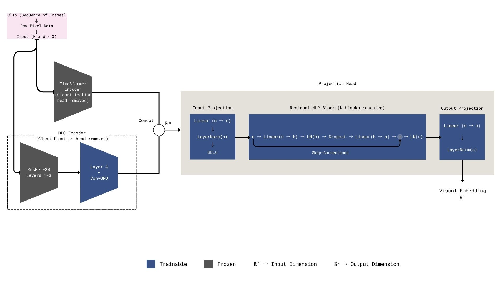

Context-Aware Zero-Shot Anomaly Detection in Surveillance Using Contrastive and Predictive Spatiotemporal Modeling
Supervisors: Prof. Dr. Md. Ashraful Alam · Md Tanzim Reza
Developed a novel zero-shot anomaly detection framework that identifies abnormal events in surveillance footage without requiring any anomaly examples during training. The system combines spatiotemporal transformers with vision-language understanding to detect previously unseen threats in real-time.
Key Innovation: Introduced a dual-stream architecture integrating TimeSformer for spatiotemporal feature extraction, DPC-RNN for predictive temporal modeling, and CLIP for semantic context alignment — enabling true zero-shot detection with context awareness.
Technical Approach: Jointly trained using InfoNCE and Contrastive Predictive Coding (CPC) losses. A context-gating mechanism modulates predictions based on scene-specific cues, reducing false alarms by adapting to different surveillance environments.
Results: Achieved 84.5% ROC-AUC and 72.3% PR-AUC on the UCF-Crime dataset, outperforming AnomalyCLIP (82.4%) with a detection latency of 0.45 s.
Tech Stack: Python · PyTorch · Hugging Face Transformers · TimeSformer · CLIP · DPC-RNN · OpenCV · UCF-Crime